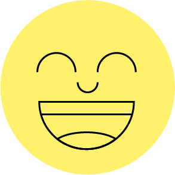

<div class="o-title-detect-container">
    <span class="o-title-detection" id="titleDetection"></span>
    <span class="o-group-detect" id="groupDetection"></span>
    <div class="o-session-time">
        <span>Inicio:&nbsp;<span id="currentSessionStartTime"></span></span>
        <span>Fin:&nbsp;<span id="currentSessionEndTime"></span></span>
    </div>
</div>
<br>
<!-- entorno de la camara -->
<div class="o-session-content">
    <div class="o-video-placeholder">
        <div id="particleContainer" class="o-particle-container"></div>
        <!--   -->
        
    </div>
    
</div>
<br>
<!-- panel donde se agregan todos los botones de control -->
<div class="o-footer-detection">
    <button class="o-btn-start o-btn-primary" id="detectionController" onclick="detectionEvent(this)" data-state="stopped">Comenzar</button>
    <!-- boton de apagar camara -->
    <div class="o-dot-icon-container">
        <button class=" o-btn-secundary" onclick="camera()">
            <div class="o-icon-text" data-state="true" id="cameraControl">
                
                <span class="o-text" id="cameraText">Desactivar</span>
            </div>
        </button>
       
        <div class="o-dots" id="dispCamera" data-state="true" onclick="displayCameraDevices()">
            <div class="o-cameradevices-container"  id="CdevicesContainer" hidden>
                <div class="o-header-option"><span>Selecciona una cámara</span></div>
            </div>
        </div> 

    </div>
    
    <!-- boton de apagar microfono -->
    <div class="o-micro-container">
        <div class="o-dot-icon-container">
            <button class=" o-btn-secundary" onclick="micro()">
                <div class="o-icon-text" data-state="true" id="microControl">
                    
                    <span class="o-text" id="microText">Desactivar</span>
                </div>
            </button>
                <div class="o-dots" id="dispMicro" data-state="true" onclick="displayMicroDevices()">
                    <div class="o-microdevices-container" id="MdevicesContainer" hidden>
                        <div class="o-header-option"><span>Selecciona un micrófono</span></div>
                    </div>
                </div>
        </div>&nbsp;
        <!-- barra de sonido -->
        <div class="o-sound-bar"><div class="o-sound-level"></div></div>
    </div>
    <!-- boton donde se despliega la emocion detectada -->
    <button class=" o-btn-secundary o-btn-img" onclick="emotion()" id="emotionControl" data-state='true'>
    </button>
</div>

